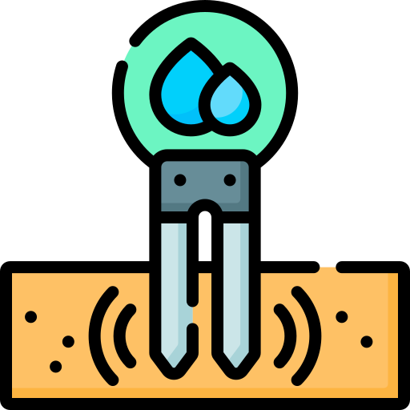

<p-dialog
  [modal]="true"
  [(visible)]="visible"
  [style]="{ width: '60rem', height: '30rem' }"
>
  <ng-template pTemplate="header">
    <div class="inline-flex align-items-center justify-content-center gap-2">
      <div class="d-flex align-items-center">
        
        <span class="fw-bold header-text ms-3"> Meus Sensores </span>
      </div>
    </div>
  </ng-template>
  <p-dataView [value]="sensors">
    <ng-template let-sensor pTemplate="list">
      <div *ngFor="let sensor of sensors" class="container">
        <div class="row mb-5">
          <div class="fw-bold sensor-name">
            {{ sensor.name }}
          </div>
          <hr />
          <div class="col-9">
            <b>Nome do sensor:</b> {{ sensor.name }}
            <br />
            <b>Localizado na plantação:</b>
            {{ "Nome da Plantação" }}
            <br />
            <b>Status:</b> {{ "Health Status do Sensor" }}
          </div>
          <div class="col-1">
            <p-button
              icon="pi pi-map"
              severity="primary"
              [outlined]="true"
              (onClick)="focusSensorOnTheMap(sensor)"
            />
          </div>
          <div class="col-1">
            <p-button
              icon="pi pi-pencil"
              severity="info"
              [outlined]="true"
              (onClick)="editSensor(sensor)"
            />
          </div>
          <div class="col-1">
            <p-button
              icon="pi pi-trash"
              severity="danger"
              [outlined]="true"
              (onClick)="deleteSensor(sensor.deviceEui)"
            />
          </div>
        </div>
      </div>
    </ng-template>
  </p-dataView>
</p-dialog>
